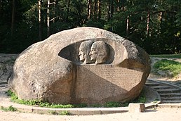

Puntukas yra 7,54 m ilgio, 7,34 m pločio ir 5,7 m aukščio (iš jų – 1,5 m po žeme). Didžiausia horizontali apimtis – 21,39 m. Pagal 2021 m. Lietuvos geologijos tarnybos informaciją akmens masė yra 446 tonos[3], nors VLE nurodo 400,[2] o daugelis kitų šaltinių – 265.[4][5] [6] Pagal petrologinę sudėtį Puntukas – pilkai rausvos spalvos amfibolinis biotitinis granitas (jame esama feldšpatų, kvarco, raginukės, biotito ir kitų mineralų kristalų); pagal struktūrą – rapakivis.[2] Puntuko akmenyje iškalti Lituanicos lakūnų Stepono Dariaus ir Stasio Girėno bareljefai bei jų testamento žodžiai lietuvių tautai. Šiuos bareljefus ir žodžius Antrojo pasaulinio karo metu, 1943 m. vidurvasarį, per 180 dienų iškalė skulptorius Bronius Pundzius, 10-ųjų skrydžio metinių proga. Akmuo nuo pagonybės laikų buvęs religinių apeigų vieta.
